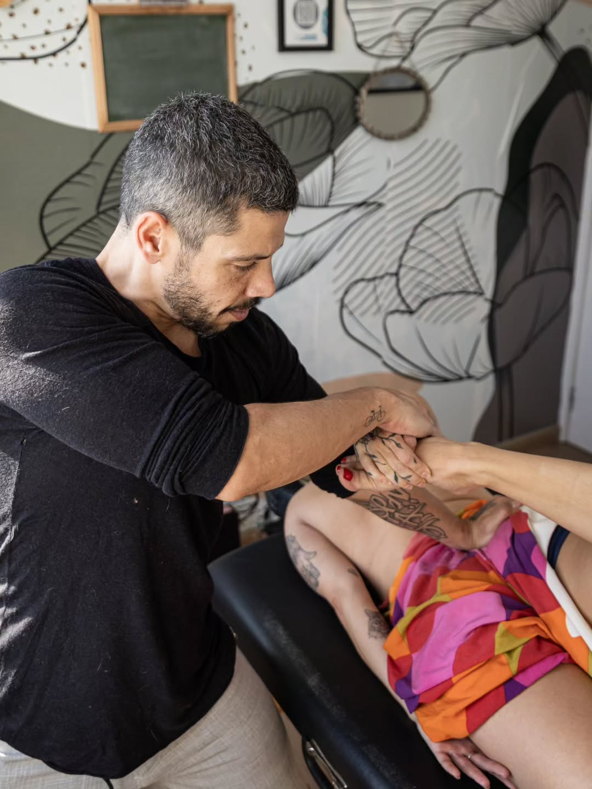
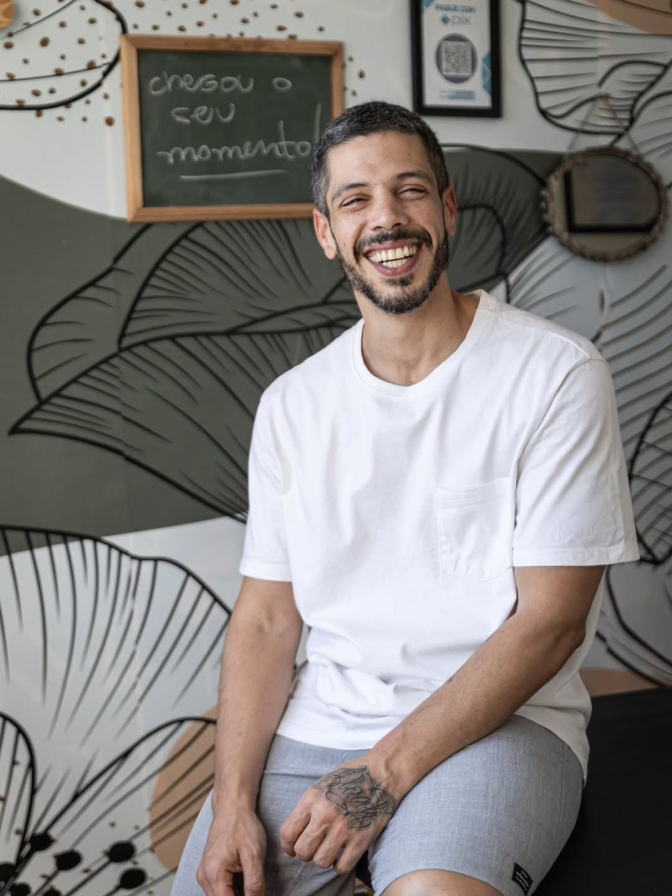

Massagens terapêuticas para aliviar dores, reduzir o estresse e recuperar seu equilíbrio.
Atendimento personalizado no Rio de Janeiro.
Agendar pelo WhatsApp

Sobre o Erich
Com atendimento humanizado e foco no bem-estar, Erich trabalha com diferentes técnicas de massagem para promover relaxamento, alívio de dores e melhoria da qualidade de vida.
Cada sessão é adaptada às necessidades individuais, proporcionando uma experiência acolhedora, segura e eficaz.
Especialista em Atendimento em domicílio, corporativo e eventos.
Formação sólida como Técnico em Massoterapia pelo Senac RJ.
Internacionalmente credenciado com o Certificate Thai Traditional Massage.
Serviços
Massagem Relaxante
Sessão de 60 minutos ideal para reduzir o estresse, ansiedade e promover relaxamento profundo.
Massagem Terapêutica
Indicada para aliviar dores musculares, tensões e desconfortos causados pela rotina.
Shiatsu
Técnica oriental que busca restaurar o equilíbrio físico e energético do corpo.
Como a massagem pode ajudar você
Alívio de dores
Reduza tensões musculares e desconfortos do dia a dia.
Menos estresse
Desacelere e recupere seu equilíbrio emocional.
Mais qualidade de vida
Cuide do corpo e da mente com regularidade.
O que dizem os clientes
"Excelente atendimento. Saí muito mais relaxada e com menos dores."
★★★★★Ana Paula
"Ambiente acolhedor e profissional. Recomendo sem dúvidas."
★★★★★Ricardo
"Uma das melhores massagens que já fiz. Voltarei com certeza."
★★★★★Fernanda
Perguntas Frequentes
Você pode agendar diretamente pelo WhatsApp.
PIX, cartão e dinheiro.
A duração varia conforme o atendimento, normalmente entre 60 e 90 minutos.
Pronto para cuidar do seu bem-estar?
Entre em contato agora e agende sua sessão.
Agendar pelo WhatsAppEntre em Contato
Rio de Janeiro - RJ